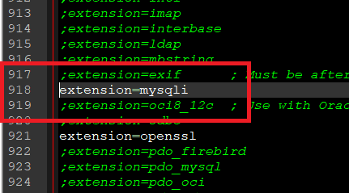
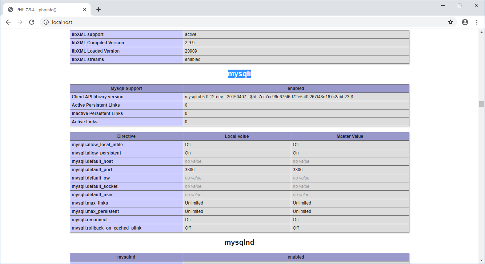
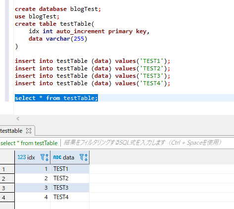
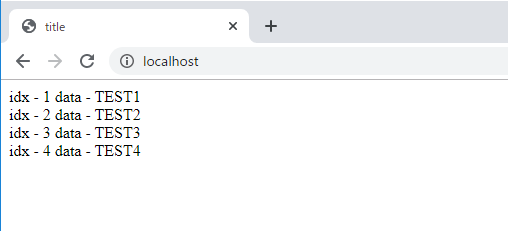

こんにちは。明月です。
ウェブサービスを開発すると思ったら当たり前にデータベースも使います。もちろん、データを必ずデータベースを使うことではなく、バイナリやエクセルなどでもデータを管理してウェブサービスを立ち上げられます。
でも、データベースよりデータ管理しやすいものでは無いので、データベースをほとんど使うと思います。
データベースの種類としてはOracleやSql server(MsSql)、mysql、postgreなど様々な種類がありますが、ここではmariaDB(mysql)を使います。
Mysqlのインストールは省略します。
link - [Ubuntu] MariaDB(Mysql)をインストールする方法
link - [CentOS] MariaDB(Mysql)をインストール
link - Window用ダウンロード
sqlクエリは各キーワードは差がありますが、概念は同じです。
PHPでデータベースを使うようにはphp.iniを修正しなければならないです。

php.iniの中で「extension=mysqli」がありますが、この部分のコメント(;)を除いてapacheを再起動します。
そしてphpinfo()で確認すると「mysqli」がロードされたことを知ることができます。

一応、PHPからデータ取得するソースを実装するため、データベースにデータを挿入しましょう。
create database blogTest;
use blogTest;
create table testTable (
idx int auto_increment primary key,
data varchar(255)
)
insert into testTable (data) values ('TEST1');
insert into testTable (data) values ('TEST2');
insert into testTable (data) values ('TEST3');
insert into testTable (data) values ('TEST4');
select * from testTable;

データを作成しました。上のデータをPHPからデータを取得しましょう。
<?php
// データベースから受取るデータをオブジェクトするクラス
class Node {
private $idx;
private $data;
// 割当て(new)する時に「idx」と「data」のデータを入れる。
public function __construct($idx, $data) {
$this->idx = $idx;
$this->data = $data;
}
// idxを取得するプロパティ
public function getIdx() {
return $this->idx;
}
// dataを取得するプロパティ
public function getData() {
return $this->data;
}
}
// データベース情報
$hostname = "localhost";
$username = "root";
$password = "";
$dbname = "blogTest";
$rslt = array();
// mysqlを接続する。
$conn = mysqli_connect($hostname, $username, $password, $dbname);
try {
// データベースを選択する。
mysqli_select_db($conn,$dbname);
// クエリを送って結果を取得する。
$rs = mysqli_query($conn,"select * from testTable");
// 結果はiteratorタイプで受け取る。
while($rst = mysqli_fetch_assoc($rs)){
// クラスを生成してデータを入れて、リストに入れる。
array_push($rslt, new Node($rst["idx"], $rst["data"]));
}
} catch ( Exception $e ) {
die ( $e );
} finally {
mysqli_close($conn);
}
?>
<!DOCTYPE html>
<html>
<head><title>title</title></head>
<body>
<?php
// リストからデータを出力する。
foreach($rslt as $value) {
echo $value;
echo "<br />";
}
?>
</body>
</html>

PHPからデータベースを接続するようにはmysqli_connectでコネクションを作ります。データベースコネクションはIOのコネクションみたいにリソースなので最後には必ずリソース返却(close)しなければならないです。
コネクションを作った後、データベースを選択します。クエリでは「use データベース」と同じです。
そして「mysqli_query」関数でクエリを送るし結果を受け取ります。
この例ではmysqli_fetch_assoc関数を使っていますが、mysqli_fetch_rowでも受け取ることが出来ます。
これは一般配列か、連関配列かの差ですが、mysqli_fetch_rowで一般配列(数字で探索)で結果を受け取られるし、mysqli_fetch_assocはカラム名のキーで連関配列で結果を受け取られます。
PHPでは連関配列でも一般配列みたいに数字でデータを取得することができるので、両方使える条件ならmysqli_fetch_rowよりmysqli_fetch_assocがいいじゃないかと思われます。
sqlコネクションはリソースなのでclose関数でリソースしなければならないです。
link - https://www.php.net/manual/en/function.mysqli-connect.php
link - https://www.php.net/manual/en/mysqli.select-db.php
link - https://www.php.net/manual/en/mysqli.query.php
link - https://www.php.net/manual/en/mysqli-result.fetch-assoc.php
- [CakePHP] Errorページを設定する方法2020/02/20 03:00:00
- [CakePHP] Transactionを使う方法とEntityクラスを利用してInsert、Update、Deleteする方法2020/02/19 03:00:00
- [CakePHP] ORMのテーブルFetch設定2020/02/18 03:00:00
- [CakePHP] Cakeフレームワークでデータベースに接続する時に使うQuery式とEntityクラス、Tableクラス、ResultSet2020/02/17 08:16:23
- [CakePHP] データベース(MariaDB(Mysql))を接続する方法2020/02/14 03:00:00
- [PHP] namespaceとuse2020/02/13 03:00:00
- [CakePHP] RequestとResponseに関して2020/02/12 03:00:02
- [CakePHP] PHPのCakeからAjax要請がある時、jsonタイプ(json_encode関数)でResponseする方法とControllerでViewを選択する方法2020/02/08 03:00:00
- [CakePHP] MVCフレームワークのCakeをインストールする方法2020/02/07 03:00:02
- [PHP] 自動require及びincludeをする方法(spl_autoload_register)2020/02/05 03:00:00
- [PHP] 匿名関数(ラムダ式)とクロージャ(closure)2020/02/04 03:00:00
- [PHP] PHPのコーディング領域とデザイン領域を分離するテンプレートライブラリ Smarty2020/02/02 03:00:00
- [PHP] Reflection - Variable編2020/02/01 03:00:00
- [PHP] Reflection - Method編2020/01/31 03:00:00
- [PHP] Reflection - Class編2020/01/30 03:00:00
- [C#] NPOIライブラリを利用してエクセルファイルを生成する方法2020/05/07 01:49:01
- [C#] Geckoライブラリを利用してウェブスクレイピングする方法2020/05/05 00:52:26
- [C#] PDFを作成する方法(iTextSharp)2020/05/03 10:22:40
- [C#] シリアライズ(Serialization)をする方法2020/04/30 19:32:04
- [C#] dynamicタイプの動的パラメータ-DynamicObject(WinFormでASP.MVCのViewBagオブジェクトを使用する方法)2020/04/29 22:41:32
- [C#] Stringの補間式(interpolation)2020/04/27 20:39:57
- [C#] Newtonsoft.JSONライブラリを利用してJsonデータ構造を扱う方法2020/04/23 20:19:53
- [C#] EMailを送信する方法(System.Net.Mail)2020/04/22 19:00:42
- [C#] ini環境ファイルを使う方法2020/04/22 00:09:39
- [C#] 環境設定ファイルを扱う方法(System.Configuration)2020/04/20 19:37:57
- [C#] Reflectionを利用してクラス複製する方法2020/04/17 00:34:33
- [C#] XMLをXPathを利用してデータを取得する方法2020/04/16 00:47:17
- [C#] NSoupライブラリを利用してXMLとHTMLをパーシングする方法2020/04/14 19:34:15
- [C#] 日付フォーマット2020/04/09 20:53:20
- [C#] ログライブラリ(log4net)を設定する方法2020/04/08 13:04:22